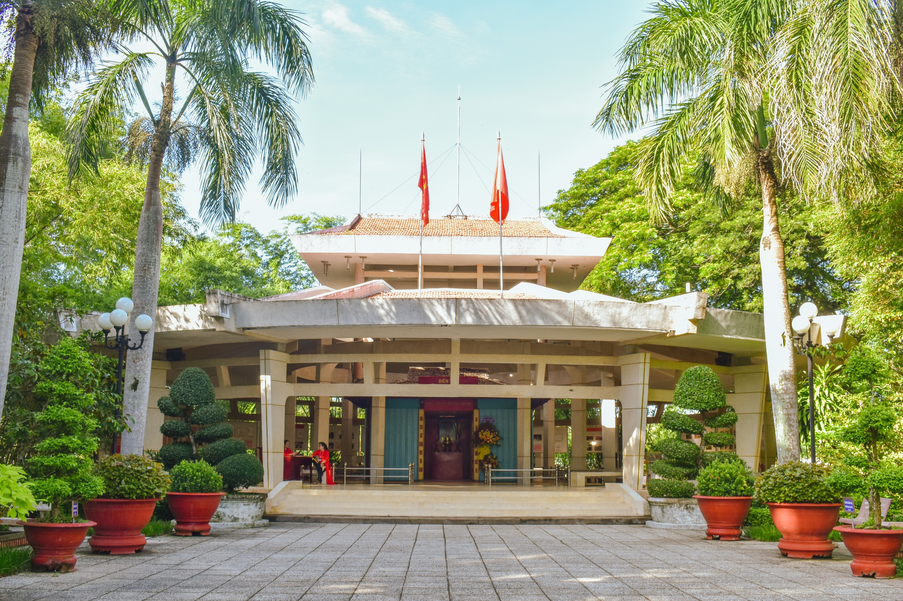
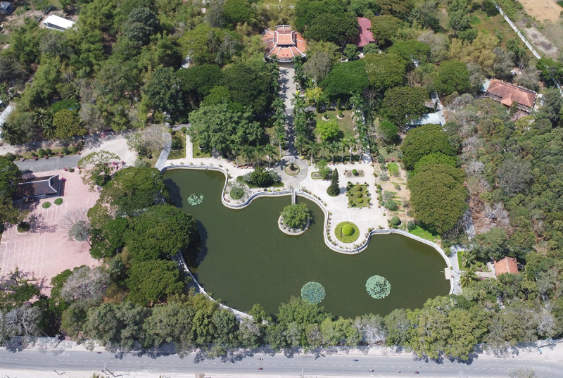
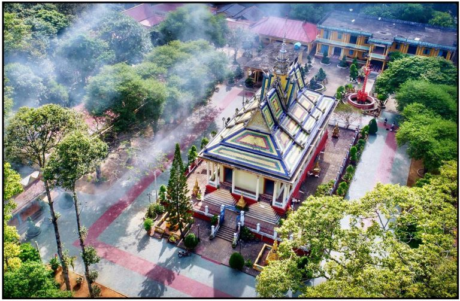
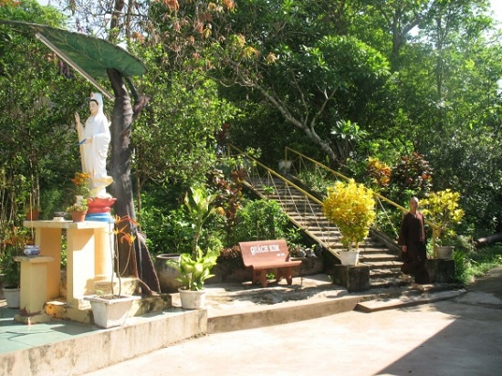
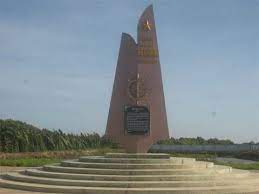
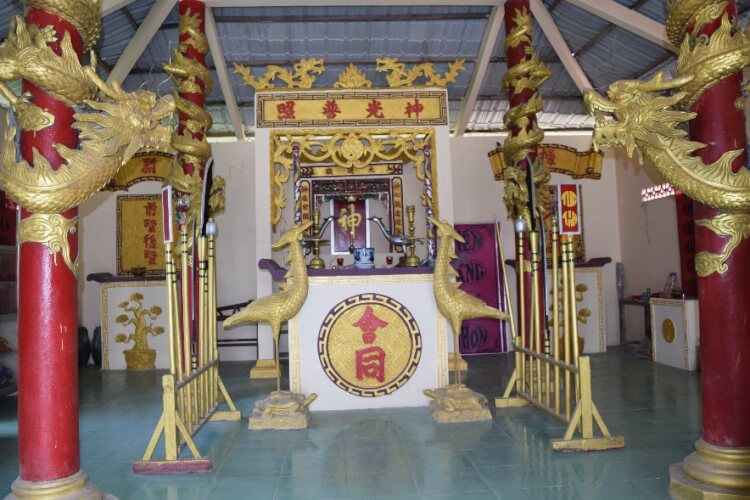

Giá trị di tích lịch sử Cách Mạng trong định hướng phát triển du lịch di sản Trà Vinh
Tỉnh Trà Vinh là vùng đất nằm ở cuối nguồn sông Cửu Long, có địa hình giáp biển Đông với đường bờ biển dài 65 km, cư dân chủ yếu là bốn dân tộc Kinh, Khmer, Hoa và Chăm. Quá trình cộng cư lâu dài của các dân tộc anh em, cùng chung vai sát cánh vượt qua những khắc nghiệt của thiên nhiên để dựng làng lập ấp, xây dựng và ổn định cuộc sống; cùng vượt qua mất mát đau thương của hai cuộc kháng chiến để chiến thắng kẻ thù giành độc lập cho quê hương, cho Tổ quốc đã góp phần quan trọng định hình những phong tục, tập quán phong phú, làm nên những di tích văn hóa – lịch sử đa dạng, đặc thù cho vùng đất Trà Vinh.
Ở xứ sở anh hùng này, dù trong thời chiến hay thời bình, bằng trí tuệ và sự anh dũng, sáng tạo, những người con Dương Công Nữ, Phạm Thái Bường, Dương Quang Đông, Nguyễn Thị Út, Nguyễn Thiện Thành,… đã ghi tên mình và quê hương Trà Vinh trên những trang sử hào hùng của dân tộc, trong những tác phẩm văn học đậm chất nhân văn, trong những công trình khoa học tiêu biểu của nước nhà.
Cùng với các nhân vật lịch sử, Trà Vinh nổi danh với những di tích lịch sử văn hóa, di tích lịch sử cách mạng ghi dấu hành trình xây dựng và phát triển quê hương, những cột mốc đấu tranh cách mạng, gìn giữ hòa bình, độc lập cho quê hương, đất nước. Có thể nói, bên cạnh những lễ hội văn hóa, những ngôi chùa Phật giáo Nam tông, những ngôi miếu người Hoa, những làng nghề truyền thống, hệ thống di tích lịch sử cách mạng này góp phần quan trọng làm nên nét đặc trưng cho vùng đất Trà Vinh trên bản đồ du lịch Việt Nam.
Tính đến tháng 12/2019, tỉnh Trà Vinh có 42 di tích đã được xếp hạng, trong đó gồm 15 di tích cấp Quốc gia, 27 di tích cấp Tỉnh. Trên cơ sở thống kê sơ bộ, chúng tôi xác định Trà Vinh có 10 di tích lịch sử cách mạng, trong đó di tích cấp Quốc gia chiếm 6/10.
Danh sách di tích lịch sử cách mạng cấp Quốc gia và cấp Tỉnh Trà Vinh
| STT | TÊN DI TÍCH | VỊ TRÍ | SỐ QUYẾT ĐỊNH | HẠNG QUYẾT ĐỊNH |
|---|---|---|---|---|
| 1 | Di tích Đền thờ Chủ tịch Hồ Chí Minh | Ấp Vĩnh Hội, xã Long Đức, TP. Trà Vinh | Số 1570 VHQĐ ngày 05/9/1989 | Cấp Quốc gia |
| 2 | Di tích chùa Giác Linh (chùa Dơi) | Ấp Nhứt A, xã Mỹ Long, huyện Cầu Ngang | Số 95-1998- QĐ/BVHTT ngày 24/01/1998 | Cấp Quốc gia |
| 3 | Di tích Bến tiếp nhận vũ khí Cồn Tàu | Ấp Cồn Trứng, xã Trường Long Hòa, TX. Duyên Hải | Số 02-2004 QĐ/BVHTT ngày 19/02/2004 | Cấp Quốc gia |
| 4 | Di tích chùa BODHICULAMANI (Ấp Sóc) | Ấp Sóc, xã Huyền Hội, huyện Càng Long | Số 834/QĐ-BVHTTDL ngày 03/3/2009 | Cấp Quốc gia |
| 5 | Di tích chùa Phước Mỹ (chùa Bà Sở) | Ấp Bến Chùa, xã Hiệp Mỹ Tây, huyện Cầu Ngang | Số 2513/QĐ-CTT ngày 10/12/2004 | Cấp Tỉnh |
| 6 | Di tích Căn cứ Tỉnh ủy Trà Vinh (căn cứ Giồng Giếng) | Ấp Giồng Giếng, xã Dân Thành, TX. Duyên Hải | Số 921/QĐ-UBND ngày 26/6/2007 | Cấp Tỉnh |
| 7 | Di tích chùa Long Thành | Ấp Long Thuận, xã Lưu Nghiệp Anh, huyện Trà Cú | Số 1367/QĐ-UBND ngày 21/7/2009 | Cấp Tỉnh |
| 8 | Di tích chùa Satharam Van Ta Rom (chùa Tà Rom) | Ấp Tà Rom A, xã Đôn Châu, huyện Trà Cú | Số 2257/QĐ-UBND ngày 11/12/2009 | Cấp Tỉnh |
| 9 | Đình miếu Cồn Trứng và Lăng Ông Cồn Tàu | Ấp Cồn Tàu xã Trường Long Hòa, TX. Duyên Hải | Số 4482/QĐBVHTTDL ngày 23/12/2015 | Cấp Quốc gia |
| 10 | Di tích Đồng Khởi Mỹ Long | Khóm 1, thị trấn Mỹ Long, huyện Cầu Ngang | Số 2225/QĐ- UBND ngày 25/10/2019 | Cấp Tỉnh |
(Nguồn: Ban Quản lí Di tích tỉnh Trà Vinh, 2019)
Giới thiệu di tích lịch sử cách mạng tỉnh Trà Vinh
1. Di tích Đền thờ Chủ tịch Hồ Chí Minh
Đền thờ Hồ Chí Minh, thường được người dân địa phương gọi là Đền thờ Bác, tọa lạc tại ấp Vĩnh Hội, xã Long Đức, thành phố Trà Vinh. Trong muôn vàn tiếc thương khi nghe tin người Cha già của dân tộc ra đi, được sự chấp thuận của Tỉnh ủy Trà Vinh, vào đầu năm 1970, Đảng bộ và nhân dân xã Long Đức đã chung tay xây dựng Đền thờ vào lúc cao điểm quân địch lấn chiếm, bình định. Mặc cho khói lửa, bom đạn, những người con Trà Vinh đã kiên cường vượt qua khó khăn, nguy hiểm, gấp rút thi công Đền để ngày 26/01/1971 (đêm giao thừa tết Tân Hợi), trước sự chứng kiến của đại diện Tỉnh ủy, Thị xã ủy Trà Vinh cùng một số người dân, lễ khánh thành Đền thờ Hồ Chí Minh đã được tổ chức trang trọng (Sở Văn hóa, Thể thao và Du lịch tỉnh Trà Vinh, 2019, tr. 60).
Ngôi đền được làm bằng các vật liệu thiên nhiên, thiết kế kiểu hình khối vuông, nóc bánh ú, mái lợp lá, khung sườn bằng loại gỗ tạp, vách tôn, nền tráng xi-măng, phía trước đền khoảng 10 m có một đài liệt sĩ bằng tôn, hình tháp (Nhân dân, 2019). Những năm tháng xây dựng và bảo vệ Đền thờ, quân dân Long Ðức đã anh dũng bám từng bờ tre, bờ ruộng chiến đấu, quyết tử giữ đền. Nhiều chiến sĩ và nhân dân đã hi sinh anh dũng nhưng khu vực đền vẫn được giữ vững và nhanh chóng xây dựng lại sau mỗi lần bị địch phá hủy, đốt cháy. Cuộc chiến đấu bảo vệ Đền không chỉ thể hiện tấm lòng người dân Long Ðức – Trà Vinh với lãnh tụ kính yêu của dân tộc mà còn trở thành biểu tượng cho ý chí sắt đá, quyết tâm thống nhất Tổ quốc, là pháo đài niềm tin của nhân dân Trà Vinh với con đường Bác Hồ và Ðảng đã chọn (Nhân dân, 2019).
2. Chùa Giác Linh
Chùa Giác Linh, còn gọi là chùa Dơi, nằm cách TP. Trà Vinh khoảng 30 km về hướng Đông Nam, cách thị trấn Cầu Ngang hơn 5 km về hướng Đông Bắc thuộc ấp Nhứt A, xã Mỹ Long Bắc, huyện Cầu Ngang, có niên đại khoảng 150 năm. Thuở ban đầu, chùa chỉ là một am nhỏ, tên gọi là Linh Sơn Điện. Từ những năm đầu của thế kỉ XX, Linh Sơn Điện là điểm hội họp sinh hoạt của những nghĩa sĩ yêu nước chống Pháp. Năm 1922, tổ chức Thanh Niên Đỏ của tỉnh được thành lập nơi đây, trong đó có đồng chí Dương Quang Đông. Đồng thời, một trong ba Chi bộ Cộng sản đầu tiên của Trà Vinh – Chi bộ Mỹ Long cũng chọn địa điểm này hội họp thường xuyên trong những năm đầu thành lập.
Đến năm 1934 – 1935, chùa được chọn làm trụ sở của cơ quan Liên tỉnh ủy Vĩnh – Trà – Bến. Trong giai đoạn cận Cách mạng tháng 8 năm 1945, để nắm bắt thời cơ khởi nghĩa giành thắng lợi, cuộc họp trù bị củng cố lại xứ ủy đã tổ chức tại chùa. Trong giai đoạn kháng chiến chống Mĩ, nhà chùa và sư cô trụ trì đã tổ chức các chuyến vận chuyển vũ khí cho cách mạng, bố trí các hầm bí mật để cán bộ ẩn tránh và chuẩn bị cả công trường chế tạo vũ khí đánh địch trong khuôn viên chùa (Trung tâm Thông tin Xúc tiến Du lịch Trà Vinh, 2019).
3. Bến tiếp nhận vũ khí Cồn Tàu
Bến tiếp nhận vũ khí Cồn Tàu thuộc địa phận ấp Cồn Trứng, xã Trường Long Hòa, thị xã Duyên Hải, tỉnh Trà Vinh, cách trung tâm thành phố Trà Vinh khoảng 60 km về hướng Đông Nam, cách thị xã Duyên Hải 12 km về hướng Đông. Du khách có thể đến tham quan di tích bằng nhiều con đường khác nhau, đường bộ, đường sông hoặc đường biển.
Bến tiếp nhận vũ khí Cồn Tàu là một trong những mắt xích quan trọng của tuyến “Đường Hồ Chí Minh trên biển”. Trong các năm 1963, 1964, Bến đã tiếp nhận 10 chuyến hàng gồm vũ khí và các loại trang thiết bị chiến tranh, cung cấp kịp thời cho các đơn vị vũ trang chủ lực Quân khu 9 và Ban Hậu cần Tỉnh đội các tỉnh khu vực Đồng bằng sông Cửu Long, góp phần quan trọng cho các đơn vị vũ trang cách mạng trên địa bàn miền Tây Nam Bộ chiến đấu và chiến thắng kẻ thù trong cuộc kháng chiến chống Mĩ cứu nước (Sở Văn hóa, Thể thao và Du lịch tỉnh Trà Vinh, 2019, tr. 69).
Nằm trong hệ thống các di tích toàn quốc về con đường Hồ Chí Minh trên biển huyền thoại, Khu di tích Bến tiếp nhận vũ khí Cồn Tàu được khánh thành và đưa vào hoạt động vào năm 2010. Di tích gồm có bia tưởng niệm hình tượng cánh buồm ghi dấu chiến công và nhà trưng bày hơn 100 bức ảnh, 50 hiện vật tái hiện các câu chuyện lịch sử đầy gian nan, nguy hiểm của các đoàn tàu không số vận chuyển vũ khí chi viện cho chiến trường miền Nam; các hình ảnh và hiện vật về những người con ưu tú của Trà Vinh gắn liền tuyến đường Hồ Chí Minh trên biển.
.jpg)
4. Đình miếu Cồn Trứng và Lăng Ông Cồn Tàu
Đình miếu Cồn Trứng tọa lạc ở ấp Cồn Trứng, Lăng Ông Cồn Tàu tọa lạc ở ấp Cồn Tàu, xã Trường Long Hòa, thị xã Duyên Hải, tỉnh Trà Vinh. Đình miếu Cồn Trứng nằm cách Lăng Ông Cồn Tàu khoảng 1.000 m về hướng bắc. Cả hai di tích cách thành phố Trà Vinh khoảng 51-52 km về hướng đông.
Đình miếu Cồn Trứng và Lăng Ông Cồn Tàu còn có tên gọi khác là Đình Lầu Cổ Truyền, Lăng Ông Nam Hải. Trong đó, Đình Lầu Cổ Truyền là tên gọi ghép giữa Đình Thần thờ Thần Thành Hoàng Bổn Cảnh và Miếu Bà (Lầu Bà) thờ bà Thượng Động Cố Hỷ và Chúa Xứ; Lăng Ông Nam Hải vì lăng thờ Nam Hải tức Cá Ông hay “Quốc Gia Nam Hải Cự Tộc Ngọc Lân Tôn Thần” (Bảo tàng Tổng hợp – Sở VH, TT & DL Trà Vinh, 2015).
Đình miếu Cồn Trứng và Lăng Ông Cồn Tàu là cơ sở tín ngưỡng có nhiều đóng góp cho sự nghiệp giải phóng dân tộc. Trong cuộc kháng chiến chống thực dân Pháp, Đình miếu Cồn Trứng, Lăng Ông Cồn Tàu là địa điểm tập họp, sinh hoạt, luyện tập của Thanh niên Tiền phong trong vùng. Phong trào đã được những người trong hội cùng những thanh niên trong vùng hưởng ứng tích cực, góp phần làm nên thắng lợi chung của cuộc tổng khởi nghĩa tháng 8/1945. Riêng Lăng Ông Cồn Tàu vào năm 1947 còn được cách mạng sử dụng làm kho chứa lúa gạo để vận chuyển tiếp tế cho Trung Bộ. Trong kháng chiến chống Mỹ, Đình miếu Cồn Trứng và Lăng Ông Cồn Tàu là nơi tiếp nhận, cất giấu, trung chuyển hàng chục tấn vũ khí từ kho Cồn Tàu đi những nơi khác. Đình miếu Cồn Trứng còn là nơi đóng quân, học tập của nhiều đơn vị cách mạng.